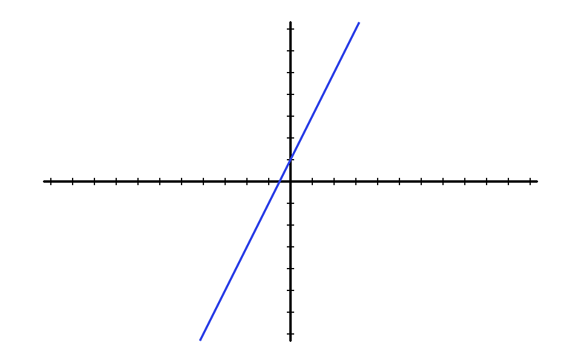
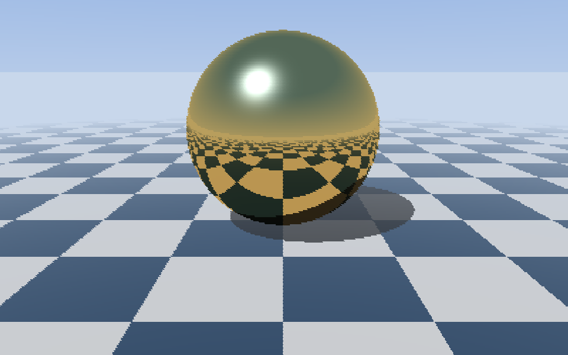
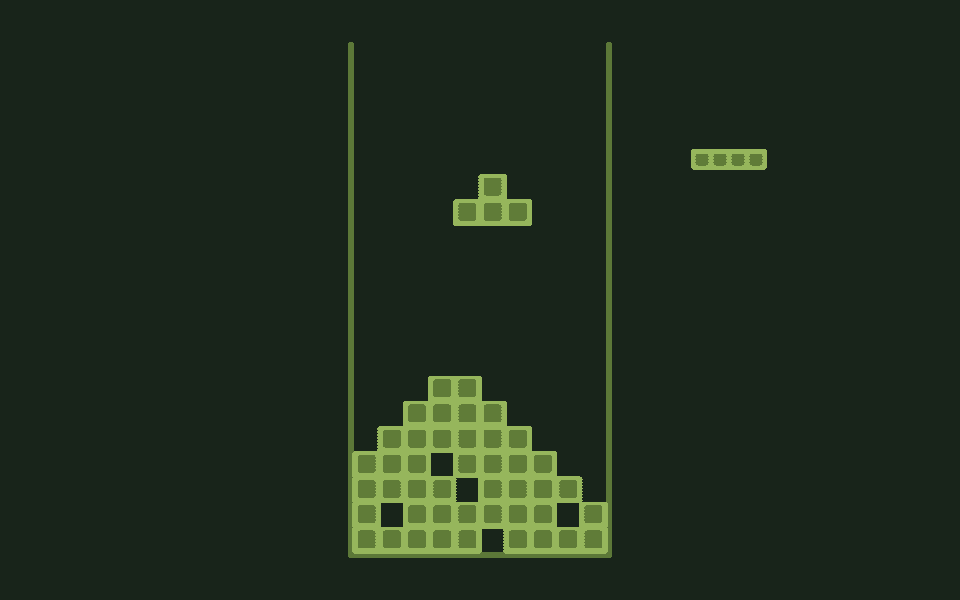
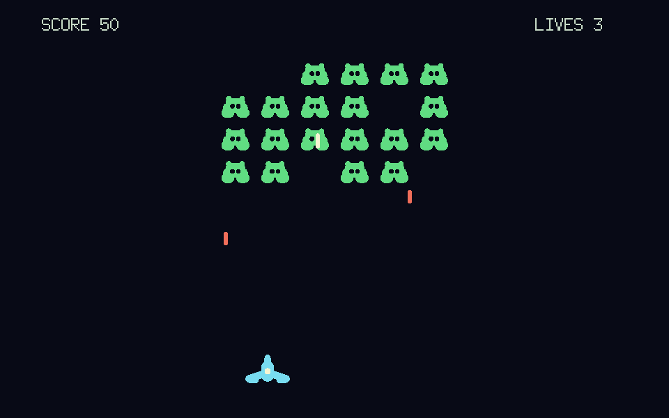
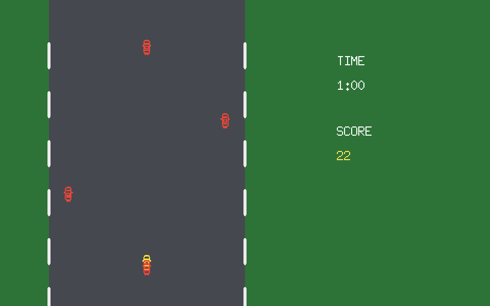
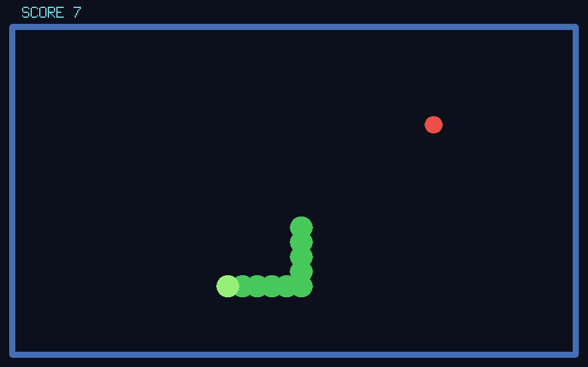

Getting started
Your first minutes with GoLogo: the REPL, the turtle, the editor
Launching GoLogo
At startup, GoLogo fills the whole screen and shows the ? prompt :
the screen is in text mode, where you type your instructions. The graphics area is
not shown yet.
GoLogo starts up in French. Type ENGLISH and press Enter to switch its
messages and help to English (FRANCAIS switches back). The commands work
in either language regardless.
To bring it up, type ST (SHOWTURTLE) : the blue graphics field
appears, with the turtle at its centre, a little arrow pointing upward, ready to set
off. (The graphics area also appears on its own as soon as the first drawing command,
such as FORWARD, runs.)
-w
argument on the command line. To quit GoLogo, press Ctrl+Q
or use the BYE command.
The REPL: type an instruction, get a result
GoLogo works as a direct dialogue. You type an instruction, you press Enter, GoLogo runs it at once. This is what we call the REPL (Read-Eval-Print Loop).
Try this :
? FORWARD 100The turtle moves forward 100 steps and draws a line behind it. Now make it turn :
? RT 90It has turned 90 degrees to the right. Chain a few instructions to draw a square by hand :
? FD 80
? RT 90
? FD 80
? RT 90
? FD 80
? RT 90
? FD 80
? RT 90That is a bit long. Logo has a much better way of doing it.
REPEAT: the first control structure
When you repeat the same thing several times, you use REPEAT
followed by the number of repetitions, then the instructions in brackets :
? REPEAT 4 [ FD 80 RT 90 ]A square in one line. This is the central idea of Logo : say clearly what you want to do, without needless repetition.
Let us clear the screen before going on :
? CSCS (CLEARSCREEN) puts the turtle back in the centre and erases all
the drawing. It is a command you will use often.
The turtle's first commands
The turtle understands four basic instructions for moving :
| Instruction | Short form | Effect |
|---|---|---|
FORWARD n | FD n | Moves forward n steps |
BACK n | BK n | Moves back n steps |
RIGHT n | RT n | Turns right by n degrees |
LEFT n | LT n | Turns left by n degrees |
With just these four, you can already do a lot. An equilateral triangle, for instance : three sides, three turns of 120 degrees.
? REPEAT 3 [ FD 100 RT 120 ]A hexagon with six sides, six turns of 60 degrees :
? REPEAT 6 [ FD 60 RT 60 ]In general, for a regular polygon with N sides, the turn is 360 divided by N. Logo can do the arithmetic :
? REPEAT 8 [ FD 50 RT 360 / 8 ]The pen
The turtle can lift its pen so as not to leave a trail :
? PU ; Pen Up
? FD 50 ; moves without drawing
? PD ; Pen Down
? FD 50 ; draws againAnd you can change the colour of the line :
? SETPC 1 ; red
? FD 60
? SETPC 2 ; green
? FD 60Colour codes run from 0 (black) to 15 (orange). See the full palette.
; starts a comment : everything after it on the same
line is ignored by GoLogo. The hash # does the same (GoLogo accepts
both, for compatibility with as many existing Logos as possible). Handy for
annotating your code.
Defining your own command with TO
So far we type everything straight into the REPL. But if you want to draw several
squares, you do not want to retype it all. The answer : create your own command
with TO.
Type this (pressing Enter after each line) :
? TO SQUARE
> REPEAT 4 [ FD 80 RT 90 ]
> ENDGoLogo replies : SQUARE DEFINED. From now on, the
SQUARE command exists and you can use it :
? SQUAREYou can now draw several squares, each in a different orientation :
? REPEAT 12 [ SQUARE RT 30 ]A rosette of 12 squares in one line, thanks to the command we just created.
Adding parameters
Our SQUARE always draws squares 80 steps wide. It would be better to
choose the size. For that we use a parameter :
? TO SQUARE :SIDE
> REPEAT 4 [ FD :SIDE RT 90 ]
> ENDThe :SIDE after the command name is a parameter. Inside the
procedure, :SIDE takes whatever value you pass when you call it :
? SQUARE 50
? SQUARE 100
? SQUARE 150Three squares of different sizes, with the same command. This is the power of parameterised procedures.
The editor: writing whole programs
Typing procedures line by line in the REPL is fine for short definitions. But for a program made of several procedures, the built-in editor is the better tool.
Type EDIT at the REPL (or press Ctrl+E when the
input line is empty) :
? EDITThe screen switches to editor mode : blue background, cyan text, a status bar at the bottom. There you can write a whole program over several lines.
Here is an example to type in the editor :
TO POLYGON :N :SIDE
REPEAT :N [ FD :SIDE RT 360 / :N ]
END
TO ROSETTE
CS
REPEAT 6 [ POLYGON 5 60 RT 60 ]
ENDOnce your program is typed, press Ctrl+S to leave the editor and validate. GoLogo interprets your procedures and returns to the REPL ; the commands you just defined are immediately usable :
? ROSETTESAVE command. See the
Keeping your programs on disk section just below.
The built-in help
GoLogo has a full help browser, available at any time with the F1 key
or the HELP command.
? HELP ; lists all the commands
? HELP REPEAT ; help on REPEAT in particularIn the help browser :
- The arrows and Enter move through the list.
- Ctrl+F or / opens a search field.
- Ctrl+L switches between English and French.
- Ctrl+I inserts the selected command into the REPL.
- Q or Esc closes the help.
Keeping your programs on disk
As we just saw, everything you define (procedures and variables) lives in
GoLogo's memory for the length of the session. To avoid losing it
all when you quit, you have to save that memory to a file on the
hard disk. These files have the .GLG extension and are kept in a
Logo folder :
- on Linux and macOS :
~/Logo/(in your home folder) ; - on Windows :
Documents\Logo\.
You never need to give the full path : GoLogo always looks in and writes to that folder. You simply give the file name, without the extension.
Saving the program in memory
The SAVE command takes the file name (preceded by a quote
") and the list of what you want to store. The simplest is to use
CONTENTS, which means all of the workspace :
? SAVE "MYDRAWING CONTENTSThat quote " matters. Placed before a name, it means
“this is a word, taken literally” : it is the file name, not a
command. Without it, GoLogo would think MYDRAWING is an instruction to
run. And it is not a pair of quotes like in other languages : you write
only one, at the start, and you never close it. The word simply
ends at the first space. You will find this same " before every file
name (LOAD "MYDRAWING, EDLOAD "MYDRAWING...).
This creates the file MYDRAWING.GLG. All your procedures and
variables are written into it : this time it is permanent. You can close
GoLogo, switch off the computer, and the file stays on disk.
SAVE "MYPROG CONTENTS regularly while
you work, the way you would save a document. It is the only way to keep your work
safe.
Listing the available files
To see which .GLG files are stored in your Logo folder, use
CATALOG :
? CATALOGGoLogo shows the list of files present, with their size. Handy for finding the exact name of a program saved in an earlier session.
Reloading a program
To bring back a saved program and use it right away, use LOAD :
? LOAD "MYDRAWINGGoLogo re-reads the file and immediately redefines everything in it into the
workspace. Each reloaded procedure prints … DEFINED. Your commands are
usable again, nothing else to do :
? ROSETTEEDLOAD "MYDRAWING, which puts the file's content into
the editor without running it, so you can read or
rework a program before validating it. To remember : LOAD
is to use a program, EDLOAD is to rework it.
Deleting a file
To permanently remove a file from disk :
? ERASEFILE "MYDRAWINGIn short: memory or disk?
| You want to… | Command | Scope |
|---|---|---|
| Define a procedure (editor) | Ctrl+S | Memory (lost on quit) |
| Store it permanently | SAVE "NAME CONTENTS | Disk (.GLG file) |
| See the saved files | CATALOG | Disk |
| Bring back and use a file | LOAD "NAME | Disk to memory |
| Bring back to rework | EDLOAD "NAME | Disk to editor |
| Delete a file | ERASEFILE "NAME | Disk |
Exploring the bundled examples
GoLogo ships with a collection of more ambitious ready-to-run examples : figures, image generation, and even real little games. A treasure trove of ideas to watch run, then tinker with.
To see the list of these examples, type CATALOGEX :
? CATALOGEXTo load one, use LOADEX followed by its name (in quotes, without the
.GLG extension) :
? LOADEX "LOGOTRIXEvery example starts the same way : once it is loaded, type
START to run it.
? START





Editing an example without breaking the original
Once an example is loaded, open it in the editor by typing ED :
its full code appears there, ready to explore and change.
? EDWhen you have changed something you like, save your version to your
personal folder with SAVE, under a name of your own :
? SAVE "MYLOGOTRIX CONTENTSYou will reload your copy later with LOAD (to use it) or
EDLOAD (to rework it in the editor) :
? LOAD "MYLOGOTRIXEssential commands at a glance
| Command | Effect |
|---|---|
FD n | Moves forward n steps |
BK n | Moves back n steps |
RT n | Turns right by n degrees |
LT n | Turns left by n degrees |
PU / PD | Pen Up / Pen Down |
SETPC n | Sets the pen colour (0-15) |
CS | Clears the screen, turtle back to centre |
REPEAT n [ ... ] | Repeats the instructions n times |
TO NAME ... END | Defines a new command |
EDIT | Opens the editor |
HELP | Opens the help browser |
SAVE "NAME CONTENTS | Saves to disk |
LOAD "NAME | Reloads a saved file |
BYE | Quits GoLogo |
What comes next, variables, conditionals, recursion, music and much more, is described in The Logo language.